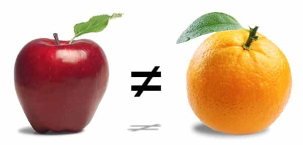
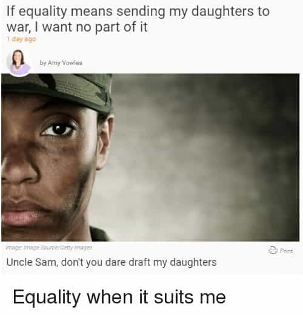

Corey is an iconoclast and the author of 'Man's Fight for Existence'. He believes that the key to life is for men to honour their primal nature. Visit his new website at primalexistence.com


There are words floating around that feminism is losing because fewer and fewer women are identifying themselves one. It is supposed to be a sign of victory that women are getting sick of the whole demented movement. But is that true? Does it matter? Does it really signal the demise of the shrieking, menstrual cult that is feminism?
I say no. I believe that women are just not calling themselves feminists because of all the negativity associated with it. Women care about their image and they’re not about to sacrifice it by associating themselves with some blue-haired freaks. Most of them don’t even want to get down and dirty by putting themselves in ideological battles. No, they’re more Machiavellian than that. But their aversion does not mean that they have rejected the basic tenets of feminism.
Just a bunch of confused kids brainwashed by our institutions.
First, you have to realize that feminism has already won. We are currently living in a post-feminist dystopia where measures are being implemented to control men and turn them into second-rate citizens. If you’re in doubt, let’s have a look at the results: In today’s society, a woman can ride the cock-carousel; get tattoos and other body modifications; get fat and expect to date men with six-packs; have a bitch attitude; make false rape, violence, or harassment accusations; have two-to-one hiring advantage in STEM; divorce-rape a man at will; and do this all without consequences and all without calling herself a feminist because she already lives in a world where feminism has destroyed all sensibility.
Women today don’t want to call themselves feminists because it is simply redundant. The fact is, the majority of them would rather enjoy the spoils of victory than be politically active. The ongoing, post-victory plundering is left for the mentally-unstable snarkies and the virtue-signaling, millennial twigs to engage in. As a man, you would be making a serious mistake to let your guard down just because a girl doesn’t identify herself as a feminist.

We know that most women still hold feminist values because while many reject the “F” label, the same poll showed that most of them still believed in “equality.” So what is this equality they are referring to? Equality they refer to are selective privileges that were earned by men who fought for them.
Let’s take, for example, the right to vote. This is one thing that even many anti-feminists refer to as an example of patriarchal oppression of the past. But do you know why women weren’t allowed to vote? Because they weren’t drafted to wars like the men. Yes, the lie of oppression and equality can only work when you cherry-pick specific privileges without taking account everything else in society that granted those “privileges.” Tell me, where were the feminists during the two world wars begging for an equal opportunity to be shipped to the front lines?
So, what the early feminists managed to accomplish was creating an absurd scenario of inequality where women were allowed to have the male privilege of voting without the responsibility of fighting wars. Even in the Soviet Union, where the sexes were supposedly made equal under communism, men in general still brunt the toil of war with over 20 million casualties (to be sure, many women did fight as well). And fast-forward to today, now that the US government is thinking about introducing draft to women, these same pampered feminists are crying that it is not equal. Simply put, these whiny women like being given “equality” by the government instead of having to earn it.
The fact that many don’t want to accept is that men are women are different. Period. This is due to biology, not some patriarchal conspiracy to enslave the womankind. Men and women each have their own strengths and weaknesses and have (or at least used to have) different roles and standards that corresponded to their sex roles. To say that men are women are equal is as silly as saying that apples and oranges are equal. Society works because the two sexes play their unique roles like how a man and a woman can dance a tango in harmony due to their separate but compatible roles. Feminist efforts to destroy this standard is what is causing all the problems between the sexes we see today.

Now that we’ve established “equality” as a false premise, let us return to the original topic of modern women and their social values. I propose that, instead of judging a woman based on whether she is a “feminist” or not, she should be judged based on whether she believes in equalism or not. Equalism being the misguided attempt to standardize two different things (in this case, the sexes) that cannot be made equal. To paraphrase: women either believe in traditional and biological role for themselves, or believe in a sham equality where they enjoy all the male privileges without the responsibilities.
And as Roosh pointed out, woman can even speak out against feminism and still hold equalist views that correspond to feminism; they are not necessarily our allies. At best, they may be genuine about fighting against the 21st century feminists who are censoring others while instigating an anti-male culture. But at worst, they are merely playing a game to garner male attention for their own ends. Personally, I wouldn’t reject these women outright, but I wouldn’t jump into fandom and orbit them like all the thirsty men do either. It’s becoming a joke how easy it is for any woman with above average looks to garner a horde of male fans just by echoing anti-leftist rhetoric.
So, next time you meet a woman, ask yourself: Does she believe that men and women have fundamental sex differences along with their corresponding roles or does she believe in “equality”? Her attitude towards sex differences will tell you a lot more about her true nature than anything she labels herself as.
Read More: Why The Female “Anti-Feminist” Is A Feminist In Disguise